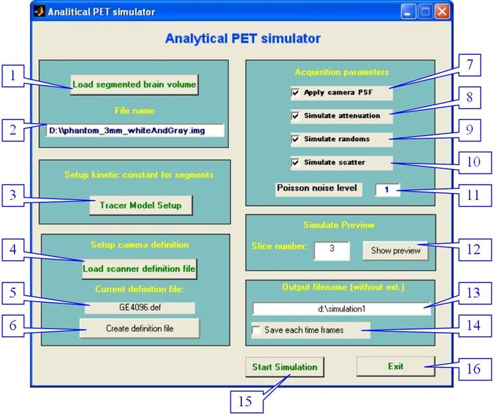
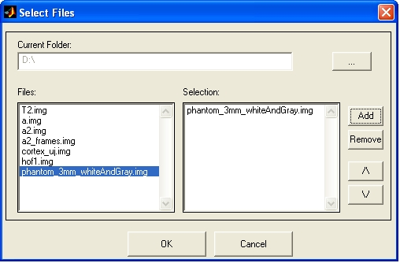
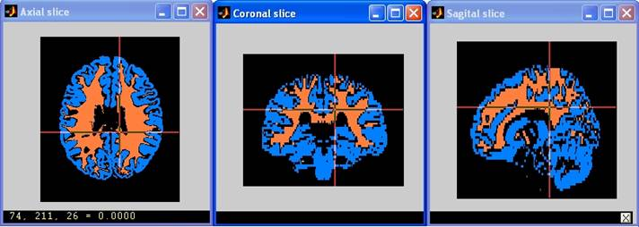
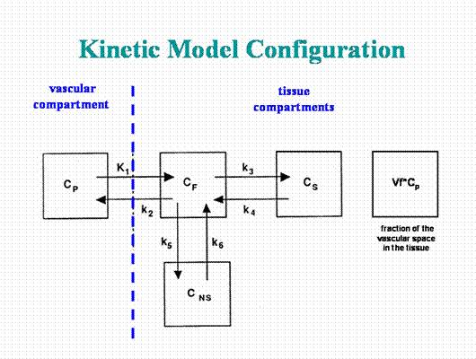
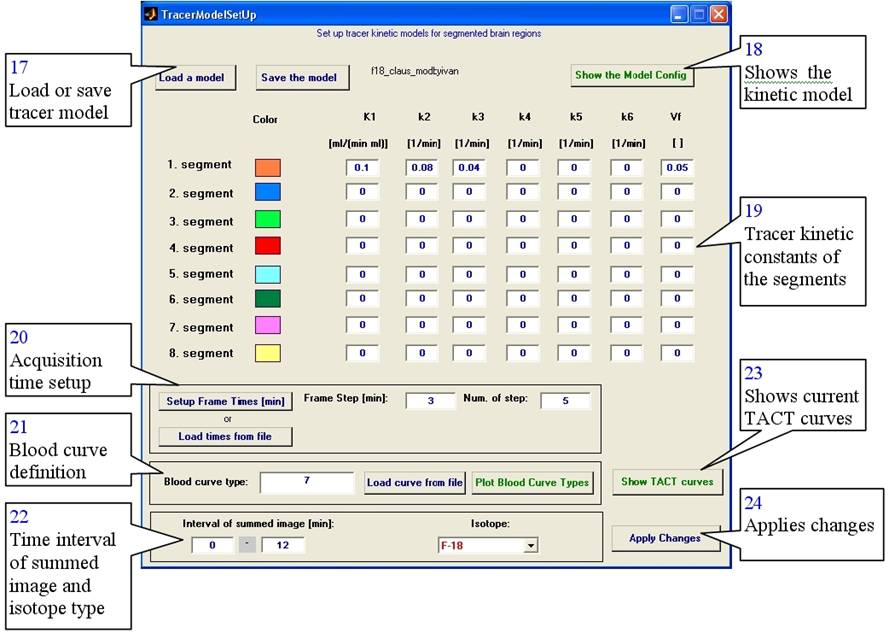
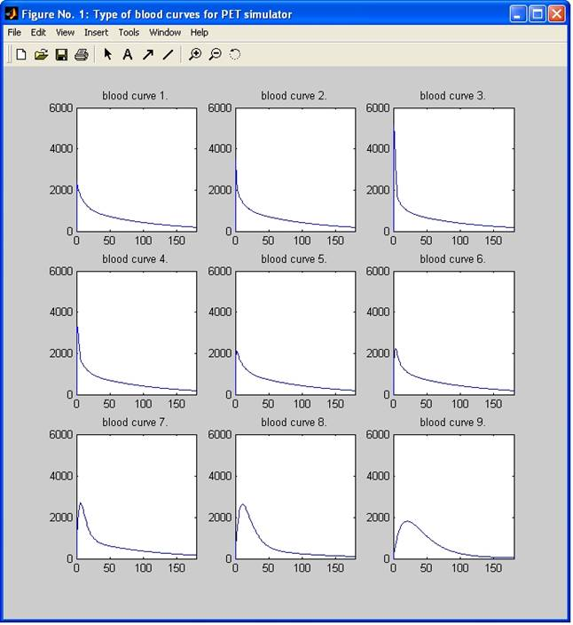

Analytical PET
Simulator
v-1.1
Users’ guide
2004
Supported by PVEOUT EU5-QLG3‑CT2000‑00594
project
A realistic simulation tool can remarkably
contribute to modelling or tracking the data acquisition process of a PET
system. The less versatile but much faster AS method is
especially instrumental in repeated simulations. A simulator of this
kind may provide highly reliable data for the PET images of the brain due to
the nearly homogeneous tissue structure of this organ, as far as analytically
describable processes are concerned (e.g. attenuation,
We have chosen the analytical simulator to
allow for the analytical calculation of distortions of primary (theoretical)
activity distribution data caused by the physical characteristics of the
scanner and the special features of image processing. The developed simulator
generates the true count distributions along the brain slices as input data for
the reconstruction using the tracer kinetic model of the applied
radiopharmaceutical to any given brain region to be simulated. A presumed blood
curve for the tracer can be selected as additional input information from a
collection of 10 different types of curves.
Most of the generated physical effects are
simulated as a Poisson process. Each effect, such as spatial blurring (using the Point Spread Function of the
camera), attenuation,
Extract
the zip file, (e.g. to folder c:\petsim) and add the petsim
folder and all subfolders into the Matlab path.
Please read the readme files in the readme_doc
folder.
Type PetAnalSimulator
or petsim_Wrapper
command in the Matlab prompt.
The main window is displayed in Figure 1.

Figure 1.: The main window of the
simulator
Parts of the main window:
1. (pushbutton) Shows the file load dialog, loads
the input segmented MR file and shows the axial, coronal and sagittal slices.
2. (text field) Displays the name of the loaded MR
file.
3. (pushbutton) Shows the tracer model setup
dialog box.
4. (pushbutton) Loads own PET camera definition
file.
5. (text field) Displays the name of the current
camera definition file.
6. (pushbutton) Creates your own camera definition
file by the default file.
7. (checkbox) Turns on/off the simulation of the
spatial resolution of the camera.
8. (checkbox) Turns on/off attenuation effect
simulation and correction.
9. (checkbox) Turns on/off random coincidences
simulation and corrections.
10. (checkbox) Turns on/off
11. (line edit) Sets the Poisson noise level
(between 0 and 1).
12. (pushbutton) Simulates the predefined PET slice
with the current parameters, and shows the summed image.
13. (line edit) Displays the name of the output
file (summed image).
14. (checkbox) Stores all time frames.
15. (pushbutton) Starts the simulation process for
the whole segmented MR file.
16. (pushbutton) Exit.
The necessary inputs for the simulations are: segmented
MR file(s), Tracer kinetic model, blood curve, acquisition times and camera
definition.
The program can read
only analyze format files.
Press the Load Segmented Brain
Volume button (1).
Choose one or up to 8 files in the file open dialog (Fig. 2.),
and press the Add button, then the OK button.
The simulator can read MR files in three different ways:
a) Reads one file, which should contain maximum 8
segments, labeled 1,2,…,8 whole numbers.
b) Reads one, two or three files. If the form of
the selected filename is XXX_seg1.img (containing the gray matter), the
simulator reads automatically the XXX_seg2.img (the white matter) and
XXX_seg3.img (the CSF) also, when they exist. In this case you must select only
the XXX_seg1.img file in the File input dialog. If the voxels
in these files are between 0 and 255, the simulator converts them into one binary segmented volume as
follows: The simulator sets the voxels to 0 having a
cumulative value below 128, (corresponding to <50%) and the voxels that are above or equal 128, are set to the segment
number (1,2, or 3, this depends on the filename).
c) Reads maximum 8 files, when you select 8
different files. The voxel conversion is same as in
section b). The voxel values of the binary segmented
volume are labeled 1,2,…,8, depending on the order of
the files. In this case you must select up to 8 files in the File input dialog.

Figure 2.: File open dialog
After loading, the program shows the axial,
coronal and sagittal slices of the segmented MRI file
(Figure 3.)

Figure 3.: The axial, coronal and sagittal views of the segmented MRI file
The simulator uses the 4-compartment tracer
kinetic model to determine activity distribution in the human brain. The 3- and
2-compartment models are special versions of the 4-compartment model, when the
k5, k6 and k3, k4 kinetic constants are 0. The 4-compartment model and
interpretation of the kinetic constants are shown in Figure 4.

Figure 4.: The 4-compartment tracer
kinetic model
Press the Tracer Model Setup
button (3). The tracer
model dialog is shown in Figure 5. The color codes of the different
segments correspond to the colors of the loaded MRI file (Figure
3.).

Figure 5.: The tracer model setup dialog

Figure 6.: Predefined blood curves
Steps
of tracer model setup:
Load a predefined tracer kinetic model (press the Load a model button (17) ), or enter the tracer kinetic constants (19). (To store the current
kinetic constants, press the Save the
model button (17) ).
a) Setting up manually: Press the Setup Frame Times button (20), and enter the Frame Step in minutes and the Number of steps.
b) Setting up from file: Press the Load times from file button (20) and select the file. The file
is a simply text file, the column should contain the frame lengths (in minutes)
of the study. ( See sample file: frametimes_c11.txt )
a) Using predefined curves: Type the number of the
predefined blood curve into the Blood
curve type field (21).
The Plot Blood Curve Types button
shows the predefined blood curves (Figure 6.).
b) Loading own blood curve: press the Load curve from file button (21), and select your blood curve.
In this case, the filename will be displayed in the Blood curve type field. The blood curve file is a simply text file.
The first column should contain the time scale of the blood curve (in
minutes), the second column should
contain the corresponding activity concentration values in nCi/ml.
(See sample file: mybloodcurve1.txt)
Specify the pharmacon:
Choose the isotope (22).
The default is the C-11, currently available isotopes in
the simulator are C-11, F-18, O-15 and N-13.
Specify the time
interval of the summed
image: Enter the time from and time to in minutes (field 22). The simulator calculates the
summed image by these values. Note: If you do not specify these values, the
summed slices will contain only 0 voxels.
Visualize the current
TACT curves:
Press the Show TACT curves button (23), this displays the TACT
curves, with the current settings.
Close dialog:
Press the Apply Changes button (24) to apply current tracer model
settings.
The most commonly applied camera parameters are
stored in a text file, with extension ‘def’.
The default camera file is the GE4096.def
(Appendix 1), describing the parameters of the GE4096plus PET scanner. This is the
automatically loaded file. To load your own camera definition file, press the Load scanner definition file button (4) and choose a file. The file
name will be displayed below the button.
To create your own definition file, press the Create definition file button (6), then type the new file name.
This function saves the default definition file (GE4096.def) as “newname” and opens
it in the Matlab Editor.
The checkboxes in the Acquisition
frame control the distortion effects and the corrections during the
simulation process.
·
Button 7 turns on/off the simulation of
the spatial resolution of the camera.
·
Button 8 turns on/off attenuation effect
simulation and correction.
·
Button 9 turns on/off random
coincidences simulation and corrections.
·
Button 10 turns on/off
Each physical effect is simulated as a Poisson process. The default Poisson
noise level is 1. You can specify other levels in the noise level field (11). The level value must be between 0 and 1.
If the value is less than 0 or greater than 1, the simulator will convert it to
0 or 1.
To simulate and correct all distortion
processes, please turn on all checkboxes.
Note: The specification order of the first, second,
third and fourth steps is
arbitrary.
You can preview the result of the simulation by
pressing the Show Preview button (12). This procedure simulates the
specified axial PET slice using the current parameters, such as tracer kinetic
constants, time frames, blood curve, isotope type, summation interval,
distortion effects and Poisson level. The result of the simulation is shown in
a separate window. This takes approx. 3 minutes on one 2.8 GHz processor. The simulator
does not store the preview data set.
Please type the output file name with full path
to the Output filename field (13), before running the whole
simulation process (The extension is not necessary). The output file format is analyze. If you check the Save each time frames
Press the Start button (15) to start the simulation for the whole segmented MRI
slices. Simulation time strongly depends on the number of time frames and the voxel number of the segmented MRI volume to be simulated.
More time frames and bigger volumes require longer calculation time. E.g.: The
whole simulation takes about 2 hours on one 2.8 GHz processor, if the numbers of
voxels are 60x217x181 and the number of time frames is 34. When the simulation
process is finished, the summed image and the images of the time frames are
stored automatically, with the specified file name. (See Sixth step)
The structure of the GE4096.def file: The italicized texts are not part of the real file,
they are only comments here.
The file is a
simple text file, with extension def.
The simulator reads only those single lines, which include the = symbol.
All other lines are comments.
General camera
parameters: (Sample data of the GE4096 PET scanner)
FOV=550 : The field of view of the scanner, in millimeters
members=96 :
The number of projections in the x direction (see radon transform, e.g. Matlab
Help, or PhD thesis of Peter Toft)
theta=[270:-180/511:90] : The projection angles in degrees and Matlab
format
projectionOffset=0 :
The start of the first projection line, in degrees
calibrationFactor=2.8e5 :
The camera acquisition efficiency with GE68 line source
voxelSize=0.048 :
The volume of one voxel in ml.
pixelSize=2 :
The size of one pixel on the axial slice (in millimeters)
radialResolutionValues=6 6.5 7 :
The FWHM of a line source on the axial slice by different radius (in
millimeters),
radialResolutionRadius=0 100 200 : and the
corresponded radius values (in millimeters)
axialPixelSize=6.5 : The width of the axial slices (in
millimeters)
axialResolutionValues=6 6.5 7 : The FWHM of a line source along
the Z axis of the camera by different Z values (in millimeters),
axialResolutionRadius=0 100 200 :
and the corresponding Z values (in millimeters)
Random effect
parameters:
The random effect is described by the out = in / randomEffectConstant
term and the random correction is described by the
out = randomCorrectionConstants(1)*in^2+randomCorrectionConstants(2)*in
equation.
randomEffectConstant=1.0014
randomCorrectionConstants=0.0375 0.161
Scatter parameters: ( To measure these
parameters on your camera, see H.Hoverath: Scatter
correction in the axial slices of a whole-body positron emission tomography.
Phys. Med. Biol. 38(1993) 717-728.
scale=2.5517
A1=1.6702e-3
A2=1.464
A3=2.145e-3
A4=1.352
A5=5.664e-2
A6=1.584e-2
A7=1.203
A8=0.2037
A10=1.195
A11=0.279
A12=0
A13=1.0907e-2
A14=0.6526e-2
A15=1.104
A16=9.334e-2
A18=1.77e-2
A21=0.118e-2